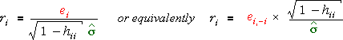

Deleted estimate of standard deviation
Although ordinary deleted residuals do not offer anything new for detecting outliers, a variation is more useful. The ordinary standardised residuals use the mean residual sum of squares (MSResid) from the full data set as an estimate of σ2,

Instead, we define the externally studentised residuals,
where σ is now separately estimated for the i'th residual from the data set without the i'th data point. (This requires a separate calculation of MSResid for each of the n deleted subsets of the data.)
Illustration
The diagram below shows a data set and its ordinary standardised residuals.
Click on any cross on the left to see how the standardised residuals are
calculated from the deleted residuals. (They could alternatively be found
from the ordinary residuals.) Note that the denominator,  ,
is the same for each standardised residual.
,
is the same for each standardised residual.
Select Externaly studentised residual from the pop-up menu and repeat. Observe that the estimates of σ are different for the different observations. In particular, note that the estimate is much smaller for the high-leverage outlier, which therefore makes the externally studentised residual stand out more than the ordinary standardised one.
Guidelines
The externally studentised residuals have approximately standard normal distributions, so they can be compared with ±2 (or ±3) to help detect outliers. Remember however that you should expect about 5% of the residuals to be outside ±2 and about 0.3% to be outside ±3, even if there are no outliers, so do not conclude that a residual outside ±3 must be an outlier in large data sets.
(If the sample size, n, is small, the proportions outside ±2 and ±3 are actually greater than 5% and 0.3%. It is actually better to replace ±2 with the 95% point of the t(n - 1) distribution, but this refinement is usually unimportant since the residuals are not used for formal testing.)
It is best to plot the externally studentised residuals against x or the fitted values to see whether any seem unusually large.
Illustration
The scatterplot on the left below shows a data set in which one observation can be altered by dragging.
The ordinary standardised residuals are plotted against x on the right and bands are shaded at ±1, ±2 and ±3. Drag the top-right observation and observe that the standardised residual is never outside the range ±3.
Select Externally studentised residual from the pop-up menu. When the point is dragged, observe that this residual becomes far more 'extreme' when the point is far from the line passing through the other observations (an outlier).
Externally studentised residuals highlight outliers better than ordinary standardised residuals.
Externally studentised residuals are best for finding outliers.